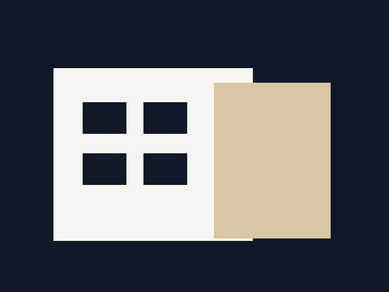
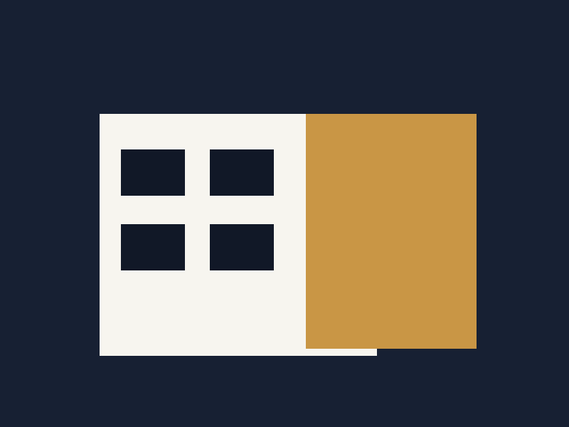
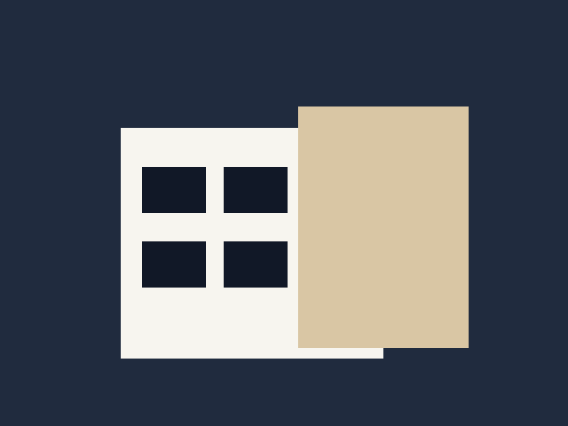

Tamamlandı
Vera Marina Residence
Alanya • Konut • 8.900 m²
Farklı ölçek ve kullanım senaryolarına göre tasarlanmış örnek proje portföyü.

Alanya • Konut • 8.900 m²

Antalya • Ticari • 12.400 m²

Alanya • Villa • 6.200 m²